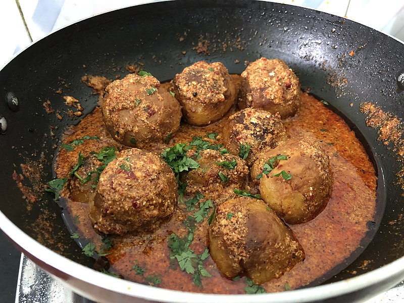
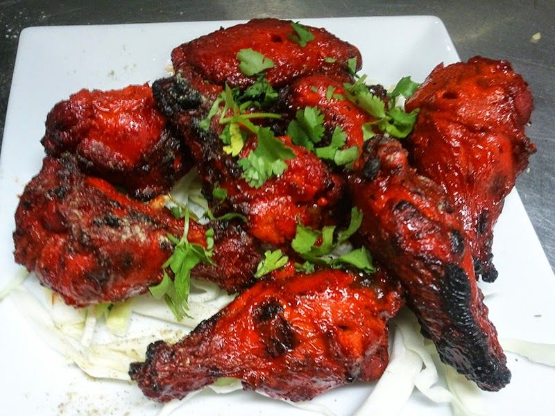
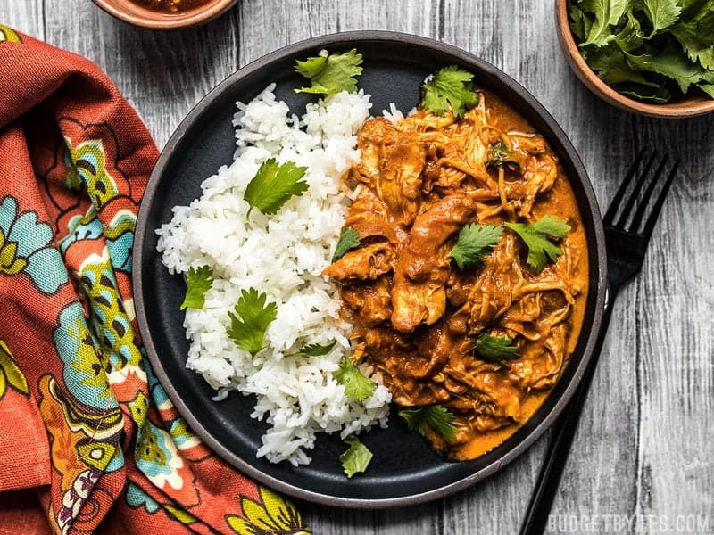

Global Food
India
Kashmiri aloo dum

Es una receta de papas cocinadas en salsa a base de yogur, zazonadas de diversas formas, generalmente con chile, hinojo, pimientos y jenjigre, dándole un fuerte sabor picante.
Pollo Tandoori

Consiste en pollo marinado en yogur y se sazona con una mezcla de especias tandoori masala, pudiendo agregarse garam masala y/o ajo, jengibre, comino, pimentón y otras especias dependiendo de la receta. En India es generalmente picante, aunque en los países occidentales se prepara más suave.
Pollo Tikka Masala

Consiste en pollo tikka servido en salsa masala y caldo de carne. No existe una receta estándar para elaborarlo, pero la mayoría de las variantes contienen leche de coco o salsa de tomate con nata, así como diferentes especias.